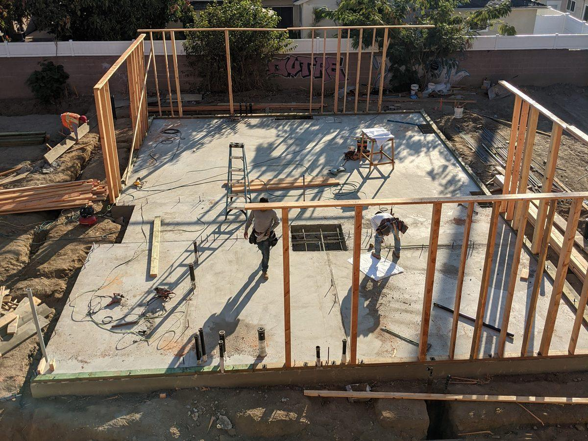

Electrical Inspection: What to Expect
in Los Angeles [2026]
An electrical inspection is one of the best investments in home safety. Here's exactly what to expect when you book one in the Los Angeles area.
Published: April 2026 · Updated: November 2026
Electrical Inspection: What to Expect (LA Guide)
Whether you're buying a home, pulling a permit, or just being proactive, an electrical inspection reveals safety and code issues before they become emergencies. Here's what the process looks like in Los Angeles.
We review your panel, visible wiring, and any symptoms you've noticed (trips, flicker, warmth).
We verify panel condition, grounding/bonding, breaker types, and label accuracy.
GFCI/AFCI function tests, polarity checks, and a look for aluminum or cloth wiring.
You receive a prioritized list of findings with safety severity and rough cost ranges.
Which Inspection Do You Need?
Home Purchase
A pre-close inspection flags hazards and negotiation leverage before you own the problem.
Safety / Insurance
Required by some insurers for older homes or after a claim. Documents your system's condition.
Permit Final
The city or LADWP inspector verifies work meets code after an upgrade or rewire.
What Actually Happens During an Inspection
A real electrical inspection is not a walkthrough with a flashlight. It is a structured assessment of everything visible and testable, and it takes one to three hours depending on the size of the home. Here is what we do, in order:
- Panel examination. We remove the dead-front (with the main off) and inspect bus bars, breakers, terminations, grounding, and bonding. We look for overheating, corrosion, double-tapped breakers, and recalled panels (Zinsco, Federal Pacific, Pushmatic).
- Load assessment. We calculate the existing load against the service size to determine whether the panel has capacity for additions like an EV charger or heat pump.
- Outlet and switch testing. Polarity, grounding, GFCI function, and AFCI presence at every accessible location. We test with a plug-in tester and a GFCI tester, not just a visual check.
- Visible wiring. Attic, crawlspace, garage, and basement inspection for damage, improper splices, missing junction covers, and conductor condition.
- Smoke and CO alarms. Location, interconnection, and age. California requires them in every bedroom, outside sleeping areas, and on every level.
- Grounding electrode system. Ground rod, water pipe bonding, and any Ufer ground. This is the part most often skipped by non-electricians.
- Outdoor electrical. GFCI protection, weatherproof covers, and conduit condition.
You are welcome to follow along. Most homeowners learn more in two hours of following an electrician than in years of owning the house.
What You Get Afterward
The inspection ends with a written report, not a verbal summary. Ours has four parts:
- Findings ranked by urgency: immediate hazard, code violation to correct at the next opportunity, and observation.
- Code references so a buyer, seller, or insurer can verify the basis instead of trusting a sales pitch.
- Photos of anything flagged, so the finding is visible to anyone who reads the report later.
- Measured data: voltage drop under load, breaker temperatures, GFCI trip times where relevant.
Repair pricing is separate and itemized. The inspection is not a sales funnel — you get the report whether or not we do the work, and you are free to get a second bid.
What an inspection is not
It is not a home inspection, not a permit inspection by the building department, and not a guarantee that concealed wiring is sound. It is a professional assessment of everything visible and testable on the day of the visit. Concealed defects show up when walls are opened, not during an inspection.
How to Prepare for an Inspection
- Clear access to the panel. Three feet of clear space in front of it, and a clear path to it.
- Clear the attic and crawlspace entrances. If they are blocked, the inspector cannot assess the wiring above and below.
- Have the disclosure packet ready. For a pre-purchase inspection, the seller's disclosure and any prior permit records help the inspector focus.
- List your concerns. Flickering lights, warm outlets, breakers that trip, smells — write them down. The inspector will check each one.
- Plan for two hours. Most inspections run 90 to 180 minutes. You do not have to be present for all of it, but being there for the panel walkthrough is worth it.
After the Inspection: What Happens Next in Los Angeles
The inspection itself does not fix anything — it maps what should be fixed, by whom, and in what order. In Los Angeles the next step depends on who asked for the inspection and what it found.
If you are buying
Bring the report to your agent the same day. Share the report with your agent and home inspector. Electrical findings — double-tapped breakers, missing GFCI, open junction boxes, aluminum wiring, Zinsco panel — become line items in a credit request. Sellers in Sherman Oaks and Studio City often prefer a credit over a rushed repair, because LADBS permit scheduling does not fit a 17-day escrow. Keep our report and any contractor quotes together — the code references let both sides price from the same scope.
If an insurer or lender asked
Forward the report and the electrician letter together. Underwriters want to see that a specific hazard (e.g., Federal Pacific panel) was identified and corrected, not just that "electrical was inspected." A panel upgrade invoice plus the re-inspection photo usually closes the condition in one cycle. See our safety inspections service → for what the letter covers.
If you live there
Budget the work the same way. Immediate hazards — failed panel, missing grounding, open splices in the attic — rarely wait for a convenient month; they carry fire or shock risk that grows with time. Code violations such as unprotected kitchen receptacles or missing AFCI in bedrooms are often corrected during the next permitted project rather than as emergency calls. Observations — an unlabeled directory, an undersized junction box, a spare conduit to the garage — become a punch list for the next remodel. This triage approach keeps spending rational instead of reactive. Homes inspected before listing can also correct defects on a contractor schedule that costs less than a buyer credit negotiated under time pressure.
Work the prioritized list top-down: immediate hazards first (failed panel, missing grounding, open splices), code violations next, observations last. Homes built before 1960 — common in Los Angeles — often pair a panel upgrade with rewiring of knob-and-tube or aluminum sections discovered during the inspection. For cost planning, see our inspection cost guide.

Electrical Inspection FAQ
How long does an inspection take? ▾
Will the inspector open my walls? ▾
What if they find a problem? ▾
Is an inspection the same as a city permit inspection? ▾
How much does an electrical inspection cost? ▾
Do I need to be home during the electrical inspection? ▾
Will the inspection damage my walls or panel? ▾
Need a Licensed Electrician in Los Angeles?
Get a free estimate from AMY Electric's C-10 certified team. Call today or request a quote online.
☔ Call (818) 302-5614 Free EstimateWritten by Amy
California C-10 Licensed Electrician · EVITP Certified · 15+ Years Experience
Amy is the founder and lead electrician at AMY Electric, serving Greater Los Angeles since 2012. He holds a C-10 Electrical Contractor License (#981578) and EVITP Certification (#4051604).
By Amram Edry — California-licensed C-10 Electrical Contractor (#981578), EVITP-certified (#4051604), over a decade and 2,000+ projects across Greater Los Angeles. Reviewed for accuracy against current California Electrical Code and LADWP/LADBS requirements. Last reviewed: November 2026. Verify the license: CSLB license lookup.